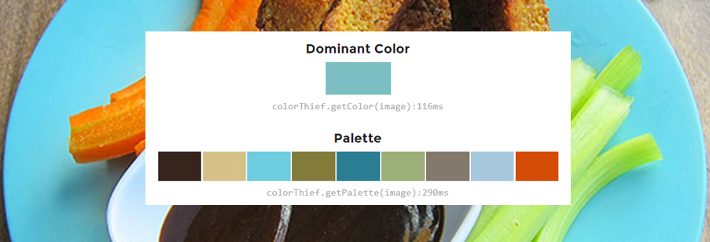

O design de interfaces é um ponto crucial para aplicações web e mobile! Neste pequeno post vou mostrar um simples código, usando uma lib em JS, para extrair as cores de uma determinada imagem.
Demonstração:
Para testar em seu device com Android baixe o .apk aqui.
Estou usando uma Lib chamada Color Thief escrita em JavaScript!
Para instalar esta lib basta fazer o donwload do color-thief.min.js e carregar no index.html:
Veja o trecho de código abaixo onde capturo as cores de uma determinada imagem:
Você pode ver o código completo deste app neste repositório
Dúvidas só deixar comentários! Espero que isso ajude alguem ;)